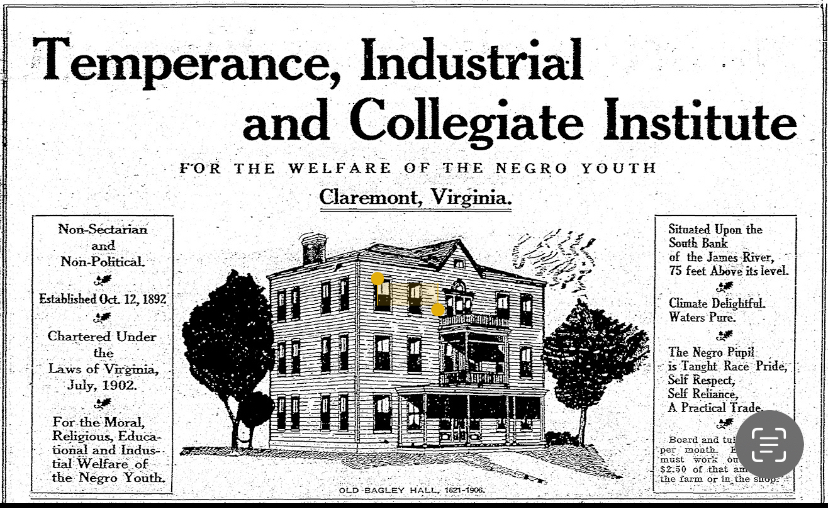
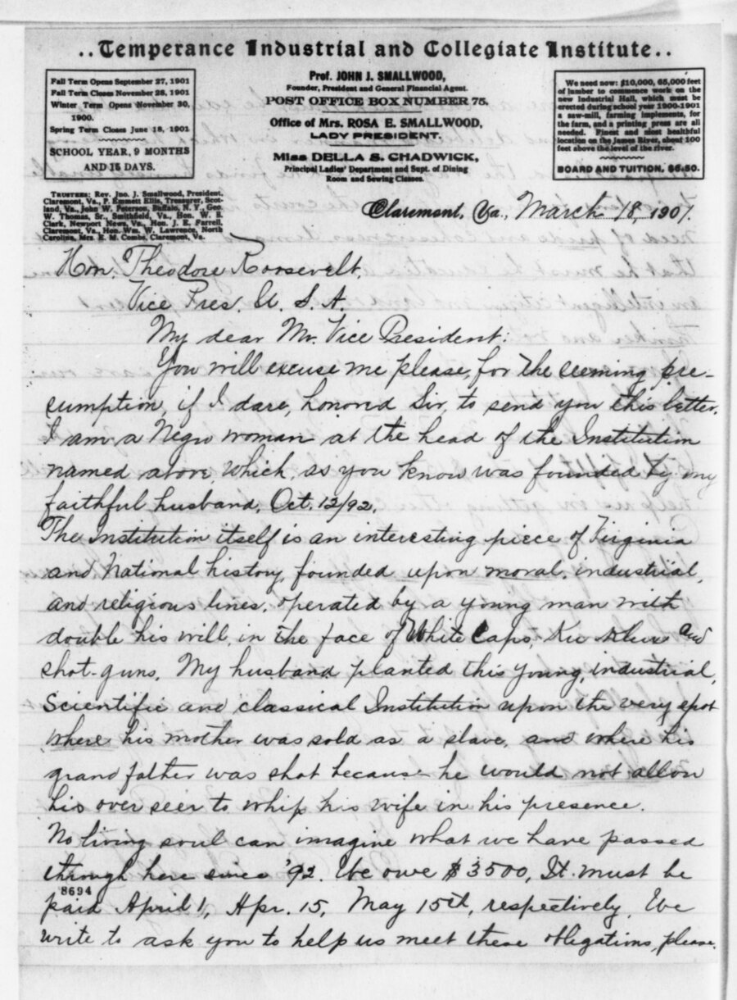

1892
Institute founded
Dr. John Jefferson Smallwood establishes the Temperance Industrial and Collegiate Institute in Claremont.
"Every record recovered is a name restored."
Dr. John Jefferson Smallwood established the Institute in 1892 to educate Black students in Surry County, Virginia.
Dedicated May 19–21, 1912 — one of Dr. Smallwood's last major public efforts before his death that September.
In 1913, Surry County Chancery Court placed the Institute's property in receivership. The full story is still being pieced together.
A planned cultural center in Claremont will carry the Institute's name and mission forward.
Verified against primary sources where possible. Disputed points are marked.
Dr. John Jefferson Smallwood establishes the Temperance Industrial and Collegiate Institute in Claremont.
Rosa E. Smallwood writes to Vice President Theodore Roosevelt on March 18, 1901, on behalf of the Institute.
A three-day dedication, May 19–21, marked by a souvenir programme printed in Richmond by John Mitchell, Jr.
September 29, 1912 — roughly four months after the Hall's dedication.
Surry County Chancery Court appoints a receiver over the Institute's property. The receiver's identity is still being researched.
Under researchA source suggests Rosa Smallwood may have reorganized the Institute's charter in January 1913 — this account conflicts with other records and is not yet resolved.
DisputedPrimary sources and documents recovered so far.
A signed portrait of the Institute's founder.
The main hall building, dedicated May 19–21, 1912.
One of the Institute's original buildings, sited above the riverbank in Claremont, overlooking the James River.

An original recruitment advertisement for the Institute, describing Old Bagley Hall (1821–1906) and the school's founding in 1892.
Published by the Institute, printed by John Mitchell, Jr. in Richmond. May 19–21, 1912.
Held by one library worldwide (CARLI/I-Share, Illinois) — not yet digitized.

Rosa E. Smallwood's March 18, 1901 letter to the Vice President, referencing the Institute's work.
Surry County Chancery Court record placing the Institute's property under receivership.
Receiver's identity pending confirmation.
Documentation of enslaved men from Claremont Plantation, tied to a Civil War-era incident at Jamestown Island.
William Orgain Allen and the Allen family held an estimated 800–1,000 enslaved people across five counties, making them the dominant plantation holders in the region surrounding the Institute.
A free Black landowner in Surry County whose life and property offer context for the community the Institute was founded to serve.
Share a family story, photograph, or record. Submissions are reviewed before publication.
Every submission is checked against existing research before it's added to the archive.
Membership funds research, preservation, and the planned cultural center in Claremont.